Tea Factory Digital
පරිපාලන කොන්සෝලය: පරිශීලක අත්පොත
කර්මාන්තශාලා කාර්යාලය කොන්සෝලය භාවිත කරන ආකාරය, එක් එක් කාර්යය අනුව: සැපයුම්කරුවන්, ඉල්ලීම් තීරණය කිරීම, මාසික බිල්පත්, කර්මාන්තශාලා වාර්තා, යෙදුමේ අන්තර්ගතය, වින්යාසය සහ පරිශීලකයන්. පියවරෙන් පියවර, තිර රූප සහ ගණනය කළ උදාහරණ සමඟ.
පටුන
- ඇතුළු වීම සහ මඟ සොයා ගැනීම
- කවුරු කුමක් කරනවාද
- උපකරණ පුවරුව
- සැපයුම්කරුවන්
- ණය ඉල්ලීම් තීරණය කිරීම
- කවුන්ටරයේදී කළ ඉල්ලීමක් සටහන් කිරීම
- තේ පැකට්
- වෙනස් කිරීමේ ඉල්ලීම්
- විමසීම්
- බිල්පත්
- දළු ලැබීම
- මිල සහ මාසය අවසන් කිරීම: ගණනය කරන බිල්පත්
- මිල සහ මාසය අවසන් කිරීම: ආනයනය කරන බිල්පත්
- පුවත්, බැනර් සහ ස්ථිර පිටු
- දැනුම්දීම්
- වින්යාසය
- පරිශීලකයන් සහ භූමිකා
- වාර්තා, විගණන ලොගය සහ දත්ත තත්ත්වය
- කොන්සෝලය ඉඩ නොදෙන විට
1. ඇතුළු වීම සහ මඟ සොයා ගැනීම
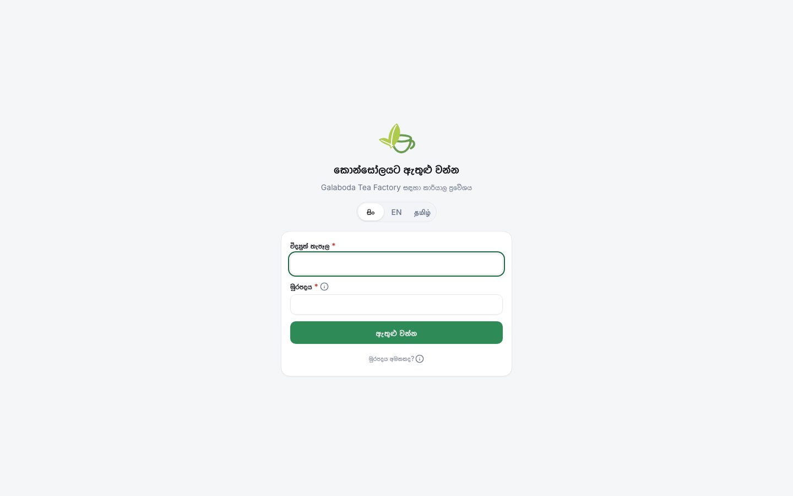
රූපය 1.1 ඇතුළු වීම. කර්මාන්තශාලාවේ නම සහ භාෂා බොත්තම් ඉහළින් ඇත.
- ඔබේ කර්මාන්තශාලාවේ කොන්සෝල ලිපිනය වෙබ් බ්රව්සරයක විවෘත කරන්න (කාර්යාල පරිගණකයේ Chrome හෝ Edge).
- භාෂාවක් තෝරන්න: සිංහල, ඉංග්රීසි හෝ දෙමළ.
- ඔබේ කාර්යාල විද්යුත් තැපෑල සහ මුරපදය ටයිප් කර ඇතුළු වන්න ක්ලික් කරන්න. නව පරිශීලකයෙකුට පළමු මුරපදය පරිපාලක ලබා දෙයි. පළමු වරට ඇතුළු වන විට එය වෙනස් කළ යුතුය.
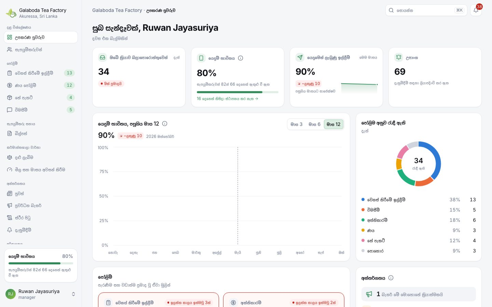
රූපය 1.2 ඇතුළු වූ පසු කොන්සෝලය: වම් පැත්තේ පැති තීරුව, ඉහළ දකුණේ සෙවීම සහ දැනුම්දීම් සීනුව.
| තිරයේ කොටස | එය කුමක් සඳහාද |
|---|
| පැති තීරුව | ඔබේ භූමිකාවට විවෘත කළ හැකි සියලු කොටස්, කණ්ඩායම් වශයෙන්: දළ විශ්ලේෂණය, පෝලිම් (බලා සිටින ගණන සමඟ), සැපයුම්කරු සහාය, කර්මාන්තශාලා වාර්තා, අන්තර්ගතය, පරිපාලනය |
| සෙවීම (Ctrl+K) | අංකයෙන් හෝ නමෙන් සැපයුම්කරුවෙකු සොයන්න, නැත්නම් නමෙන් පිටුවකට යන්න |
| සීනුව | ඔබ බලාපොරොත්තුවෙන් ඇති දේ, පැරණිම ඒවා මුලින්, සහ සැපයුම්කරුවන් යෙදුමේ මෑතකදී කළ දේ |
| ඔබේ නම (පහළ වම) | ඔබේ පැතිකඩ, පෙනුම, අකුරු ප්රමාණය සහ ඉවත් වන්න |
පොදු කාර්යාල පරිගණකයක
පිටව යන විට සැමවිටම ඉවත් වන්න. ඉවත් වීමට පෙර කොන්සෝලය අසයි. එබැවින් අහම්බෙන් ක්ලික් කිරීමකින් ඔබේ වැඩ නැති වෙන්නේ නැත.
2. කවුරු කුමක් කරනවාද
| භූමිකාව | කොන්සෝලයේ දෛනික වැඩ |
|---|
| ලිපිකරු | සැපයුම්කරු වාර්තා, දළු ලැබීම, මාසයේ බිල්පත් ආනයනය කිරීම හෝ සෑදීම, කවුන්ටරයේදී කළ ඉල්ලීම් සටහන් කිරීම, වෙනස් කිරීමේ ඉල්ලීම්, විමසීම්වලට පිළිතුරු දීම |
| කළමනාකරු | අත්තිකාරම්, ණය, පොහොර සහ තේ පැකට් තීරණය කිරීම; මිල, මාසය අවසන් කිරීම සහ බිල්පත් ප්රකාශයට පත් කිරීම; ඉතිරිකිරීම් ආපසු ගැනීම් අනුමත කිරීම; වාර්තා |
| සංස්කාරක | පුවත්, ප්රවර්ධන බැනර්, ස්ථිර පිටු (නිතර අසන ප්රශ්න, කොන්දේසි) භාෂා තුනෙන්ම |
| කර්මාන්තශාලා පරිපාලක | වින්යාසය, පරිශීලකයන් සහ භූමිකා; සියලු කර්මාන්තශාලා වාර්තා කියවයි, නමුත් කිසිවක් වෙනස් නොකරයි |
දෙදෙනෙකුගේ නීතිය
ඉල්ලීමක් සටහන් කරන, මාසයේ මිල ඇතුළත් කරන හෝ බිල්පත් ආනයනය කරන පුද්ගලයාට ඒවා අනුමත කිරීමට හෝ ප්රකාශයට පත් කිරීමට නොහැක. කොන්සෝලය එම පුද්ගලයාට අනුමත කිරීමේ හෝ ප්රකාශයට පත් කිරීමේ බොත්තම පෙන්වන්නේ නැත. එය වෙනත් කෙනෙකු කළ යුතුය.
සෑම අනුමැතියක්ම කර්මාන්තශාලා පද්ධතියටත් ඇතුළත් කරන්න
කොන්සෝලය කිසි විටෙක කර්මාන්තශාලාවේම පද්ධතියට ලියන්නේ නැත. සෑම අනුමත කිරීමේ කවුළුවක්ම ඔබට මතක් කරයි: මෙහි අනුමත කළ පසු, එම දේම කර්මාන්තශාලා පද්ධතියටත් ඇතුළත් කරන්න. පත්රිකාව මුද්රණය කර මුදල් ගෙවන්නේ එම පද්ධතියයි.
3. උපකරණ පුවරුව
උපකරණ පුවරුව (රූපය 1.2) දවස එක බැල්මකින් පෙන්වයි:
- ඔබේ ක්රියාව බලාපොරොත්තුවෙන්: පෝලිම්වල ඇති සියල්ල (උදාහරණයේ 34ක්, ඉන් 9ක් ඉලක්ක කාලය ඉක්මවා ඇත).
- යෙදුම් භාවිතය: මුළු සැපයුම්කරුවන් අතරින් යෙදුමට ඇතුළු වී ඇති ගණන (82න් 66ක්, 80%). කවුන්ටරයේදී උදව් කළ යුතු සැපයුම්කරුවන්ගේ ලැයිස්තුව සඳහා "16 දෙනෙක් කිසිදා ස්ථාපනය කර නැත" ක්ලික් කරන්න.
- යෙදුමෙන් ලැබුණු ඉල්ලීම්: මෙම මාසයේ ඉල්ලීම් අතරින් යෙදුමෙන් ආ ප්රමාණය (90%).
- උපාංග: දැනුම්දීම් සඳහා ලියාපදිංචි කළ දුරකථන.
- පෝලිම අනුව රැඳී ඇති සහ පෝලිම්: එක් එක් පෝලිම සහ එහි පැරණිම අයිතමයේ වයස. දින හතරක් බලා සිටි තුනක පෝලිමක් අද උදේ ආ විස්සකට වඩා කලින් බැලිය යුතුය.
- අන්තර්ගතය: නිහඬව වැරදී ඇති දේ, උදාහරණයක් ලෙස සිංහල පිටපත නැති ලිපියක් හෝ දින ඉක්මවා ගිය බැනරයක්.
4. සැපයුම්කරුවන්
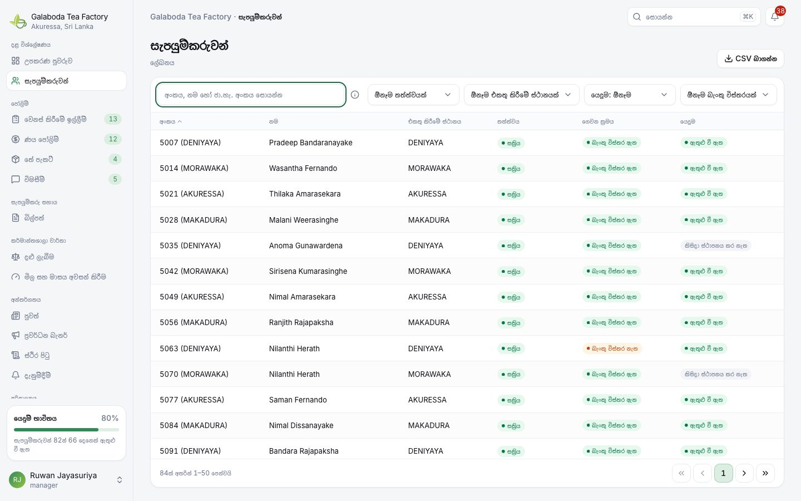
රූපය 4.1 සැපයුම්කරු ලැයිස්තුව. තත්ත්වය, එකතු කිරීමේ ස්ථානය, යෙදුම් භාවිතය සහ බැංකු විස්තර අනුව පෙරහන් ඇත.
4.1 සැපයුම්කරුවෙකු සොයන්න
- සැපයුම්කරුවන් ක්ලික් කරන්න, නැත්නම් ඕනෑම තැනක Ctrl+K ඔබන්න.
- අංකයක්, නමක් හෝ ජා.හැ. අංකයක් ටයිප් කරන්න. පෙරහන් භාවිත කරන්න: යෙදුම: ඕනෑම → කිසිදා ස්ථාපනය කර නැත තේරූ විට යෙදුම ස්ථාපනය නොකළ සැපයුම්කරුවන් පෙන්වයි.
- සැපයුම්කරු විවෘත කිරීමට පේළිය ක්ලික් කරන්න.
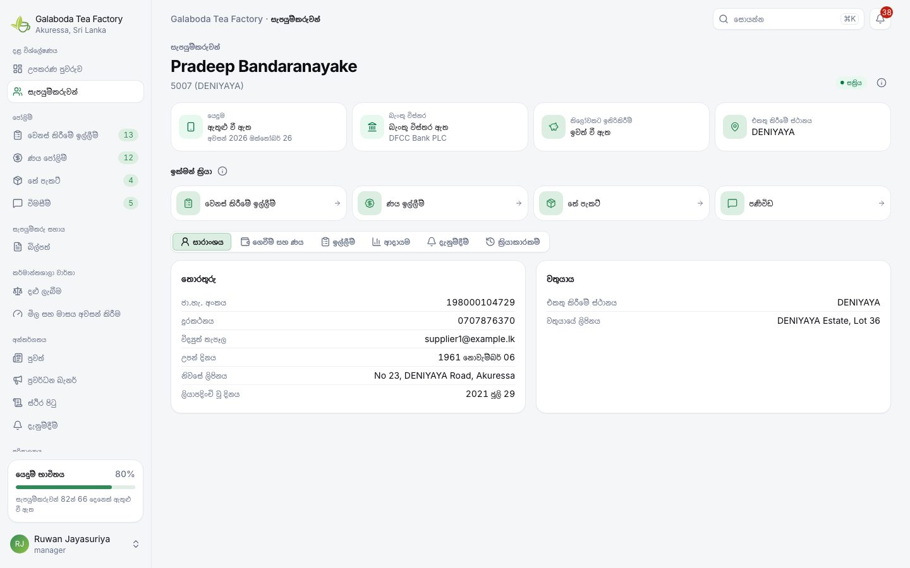
රූපය 4.2 සැපයුම්කරුවෙක්: ඉහළින් යෙදුම, බැංකුව, ඉතිරිකිරීම් සහ එකතු කිරීමේ ස්ථානය, ඉක්මන් ක්රියා, ඉන්පසු ටැබ්.
| ටැබය | එහි පෙන්වන දේ |
|---|
| සාරාංශය | පැතිකඩ (ජා.හැ. අංකය, දුරකථනය, ලිපින) සහ වත්ත |
| ගෙවීම් සහ ණය | ගෙවන ආකාරය, බැංකුව (සඟවා), කිලෝවකට ඉතිරිකිරීම්, ණය ශේෂ සහ ඉතිරිකිරීම් පාස් පොත (රූපය 4.3) |
| ඉල්ලීම් | සෑම අත්තිකාරම්, ණය, පොහොර සහ තේ පැකට් ඉල්ලීමක්ම එහි තත්ත්වය සමඟ (රූපය 4.4) |
| ආදායම | සැපයුම්කරු යෙදුමේ දකින ප්රස්තාරය, ලැයිස්තුව සහ අඩු කිරීම් දසුන්ම |
| දැනුම්දීම් | මෙම සැපයුම්කරුට ලැබෙන දැනුම්දීම්, සහ එකක් නොලැබෙන්නේ ඇයි (දුරකථනයක් නැත, අක්රිය කර ඇත, යවා නැත) |
| ක්රියාකාරකම් | සැපයුම්කරු යෙදුමේ කළ දේ |
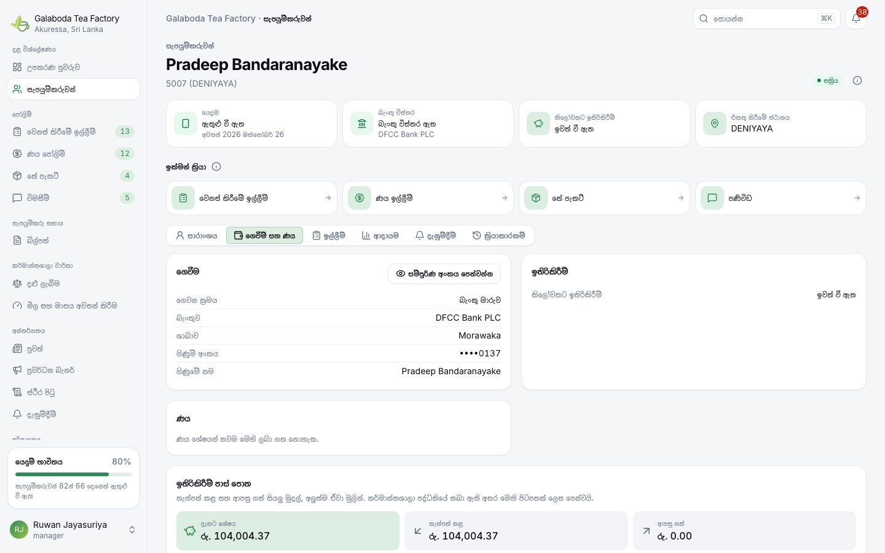
රූපය 4.3 ගෙවීම් සහ ණය
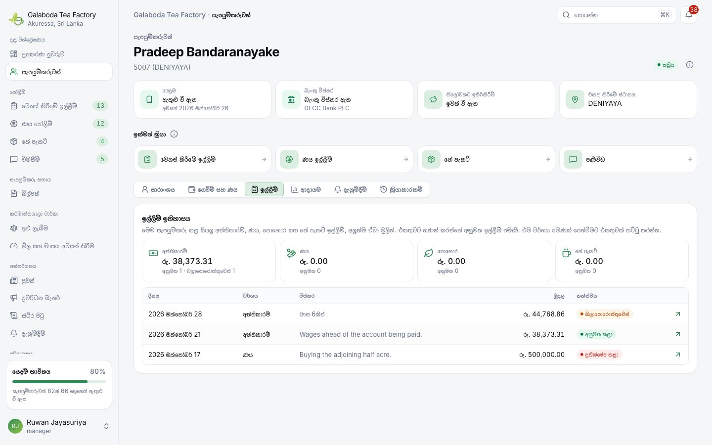
රූපය 4.4 ඉල්ලීම්
4.2 සම්පූර්ණ බැංකු ගිණුම් අංකය පෙන්වන්න
ගෙවීම් සහ ණය ටැබයේ සම්පූර්ණ අංකය පෙන්වන්න ක්ලික් කර, හේතුව ටයිප් කර (උදාහරණයක් ලෙස "කවුන්ටරයේදී ගිණුම තහවුරු කරන්න සැපයුම්කරු ඉල්ලුවා") තහවුරු කරන්න. හේතුව විගණන ලොගයේ සටහන් වේ. ඔබ පිටව ගිය විට අංකය නැවත සැඟවේ.
4.3 සැපයුම්කරුවෙකුගේ යෙදුම් මුරපදය නැවත සකසන්න ලිපිකරු
- සැපයුම්කරු විවෘත කර ඉහළ දකුණේ ඇති යෙදුමේ මුරපදය නැවත සකසන්න ක්ලික් කරන්න.
- එය ඔහුම බව ඔබ පරීක්ෂා කළ ආකාරය තෝරන්න (උදාහරණයක් ලෙස "කවුන්ටරයේ පොත").
- කොන්සෝලය එක් වරක් භාවිත මුරපදයක් පෙන්වයි: එය සැපයුම්කරුට දෙන්න. ඔහුගේ දුරකථනවලින් ඔහු ඉවත් කෙරේ. ඊළඟ වර ඇතුළු වන විට තමන්ගේම මුරපදයක් තෝරා ගන්නා ලෙස යෙදුම ඉල්ලයි. එය නිකුත් කළේ කවුද, කවදාද යන්න සටහන් වේ.
ඒ අසල ඇති තත්ත්ව බොත්තමෙන් සැපයුම්කරුවෙකු අත්හිටුවීමට හෝ වසා දැමීමට හැක.
4.4 සැපයුම්කරුවෙකු එකතු කරන්න ලිපිකරු, සමමුහුර්තකරණය අක්රියයි
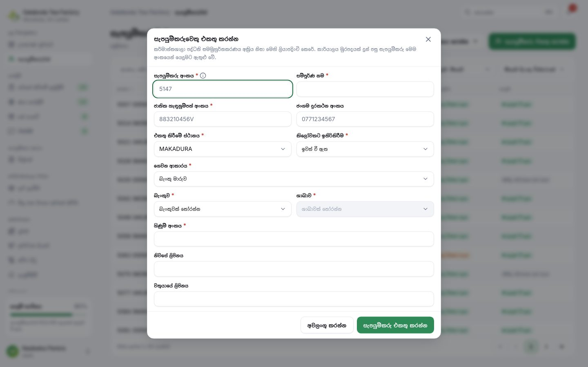
රූපය 4.5 සැපයුම්කරුවෙකු එකතු කිරීම
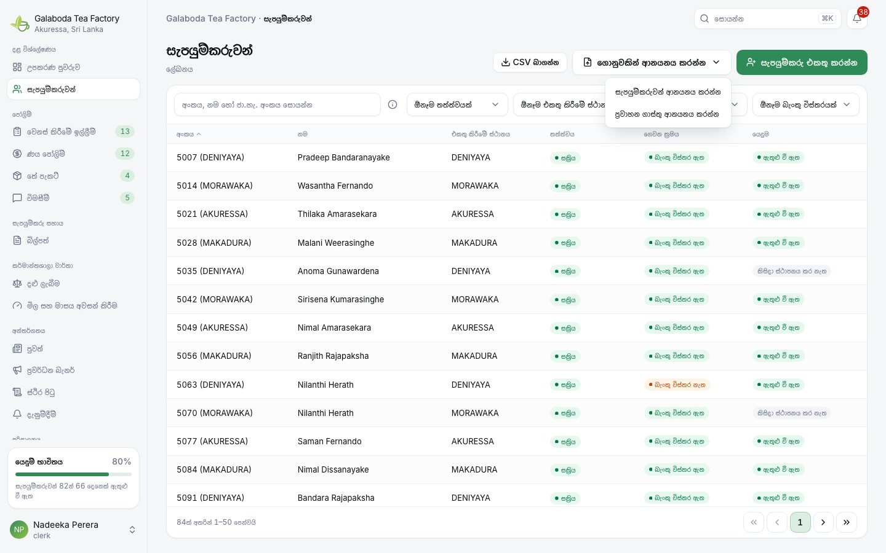
රූපය 4.6 ගොනුවකින් ආනයනය කරන්න
- සැපයුම්කරුවන් තිරයේ සැපයුම්කරු එකතු කරන්න ක්ලික් කරන්න.
- කර්මාන්තශාලාවේම සැපයුම්කරු අංකය ටයිප් කරන්න (අකුරු සහ ඉලක්කම්; වරහන් තුළ කොට්ඨාසය දැමීම අනිවාර්ය නොවේ). එම අංකය කර්මාන්තශාලාවේ වෙනත් කිසිම තැනක භාවිත වී තිබිය නොයුතුය: 5147 සහ 5147 (DENIYAYA) යනු එකම සැපයුම්කරුයි.
- නම, ජා.හැ. අංකය, ජංගම දුරකථනය, එකතු කිරීමේ ස්ථානය සහ කිලෝවකට ඉතිරිකිරීම් පුරවන්න.
- ගෙවන ආකාරය තෝරන්න. බැංකු මාරුව නම්, කර්මාන්තශාලාවේ ලැයිස්තුවෙන් බැංකුව සහ ශාඛාව තෝරා ගිණුම් අංකය ටයිප් කරන්න.
- සැපයුම්කරු එකතු කරන්න ක්ලික් කරන්න. ඉන්පසු ඔහුට යෙදුම භාවිත කළ හැකි වන ලෙස මුරපදය නැවත සකසන්න (4.3).
එකවර බොහෝ දෙනෙක්: ගොනුවකින් ආනයනය කරන්න → සැපයුම්කරුවන් ආනයනය කරන්න (රූපය 4.6), නැත්නම් තමන්ගේම ප්රවාහන ගාස්තුවක් ඇති සැපයුම්කරුවන් සඳහා ප්රවාහන ගාස්තු ආනයනය කරන්න. ආනයනය ක්රියා කරන ආකාරය 13.3 කොටසේ ඇත.
ඉදිරියේදී
ආරම්භක ශේෂ (කර්මාන්තශාලාව කොන්සෝලය භාවිත කිරීමට පටන් ගත් විට එක් එක් සැපයුම්කරු ගෙවිය යුතුව තිබූ හෝ තබා තිබූ මුදල) සේවාදායකය සහාය දුන් විට ගෙවීම් සහ ණය ටැබයේ පෙනේ.
5. ණය ඉල්ලීම් තීරණය කිරීම කළමනාකරු
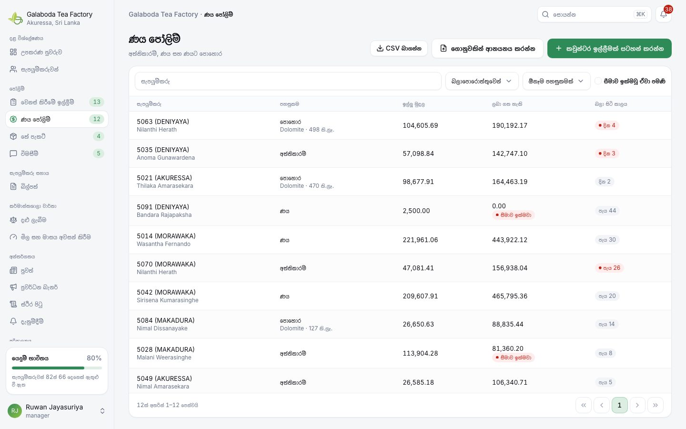
රූපය 5.1 ණය පෝලිම්: අත්තිකාරම්, ණය සහ පොහොර එකම ලැයිස්තුවක, පැරණිම ඒවා මුලින්. "සීමාව ඉක්මවා" යන්නෙන් සැපයුම්කරුගේ සීමාවට වඩා වැඩි ඉල්ලීමක් සලකුණු කරයි.
- ණය පෝලිම් ක්ලික් කරන්න. තත්ත්වය, පහසුකම, හෝ සීමාව ඉක්මවූ ඒවා පමණි අනුව පෙරන්න.
- ඉල්ලීමක් විවෘත කිරීමට එය ක්ලික් කරන්න (රූපය 5.2). මෙම සැපයුම්කරුට ලබා ගත හැකි ප්රමාණය සහ මෙය ගණනය කළ ආකාරය පරීක්ෂා කරන්න: මේවා සැපයුම්කරු යෙදුමේ දුටු අගයන්මයි.
- අනුමත කරන්න හෝ ප්රතික්ෂේප කරන්න ක්ලික් කරන්න.
- තීරණයේ සටහන ටයිප් කරන්න (අනිවාර්යයි; සැපයුම්කරු එය කියවයි), නැත්නම් පොදු සටහනක් ක්ලික් කරන්න.
- තහවුරු කරන්න. ඉන්පසු කවුළුව මතක් කරන පරිදි අනුමැතිය කර්මාන්තශාලා පද්ධතියට ඇතුළත් කරන්න.
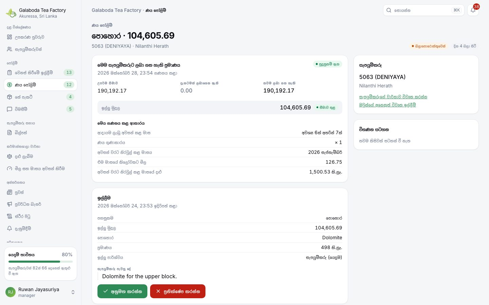
රූපය 5.2 ගණනය කිරීම සමඟ පොහොර ඉල්ලීමක්.
උදාහරණය: ගණනය කිරීම කියවීම (රූපය 5.2)
සැපයුම්කරු 5063 (DENIYAYA) ඩොලමයිට් ඉල්ලයි, කි.ග්රෑ. 498 රු. 104,605.69
ආදායම ලැබූ අවසන් කළ මාස 7 (අවශ්ය 6)
අවසන් වරට නිරවුල් කළ මාසය 2026 සැප්තැම්බර්
එම මාසයේ කිලෝවකට මිල රු. 126.75
අවසන් වරට නිරවුල් කළ මාසයේ දළු කි.ග්රෑ. 1,500.53
උපරිම සීමාව 126.75 × 1,500.53 = 190,192.1775 → රු. 190,192.17
දැනටමත් ලබාගෙන ඇති 0.00
තවම ලබා ගත හැකි රු. 190,192.17 → "සීමාව තුළ"
උපරිම සීමාව ශතයට පහළට කපා හරියි, කිසි විටෙක ඉහළට වට කරන්නේ නැත. එබැවින් පෙන්වන අගය පෝරමය පිළිගන්නා අගයකි.
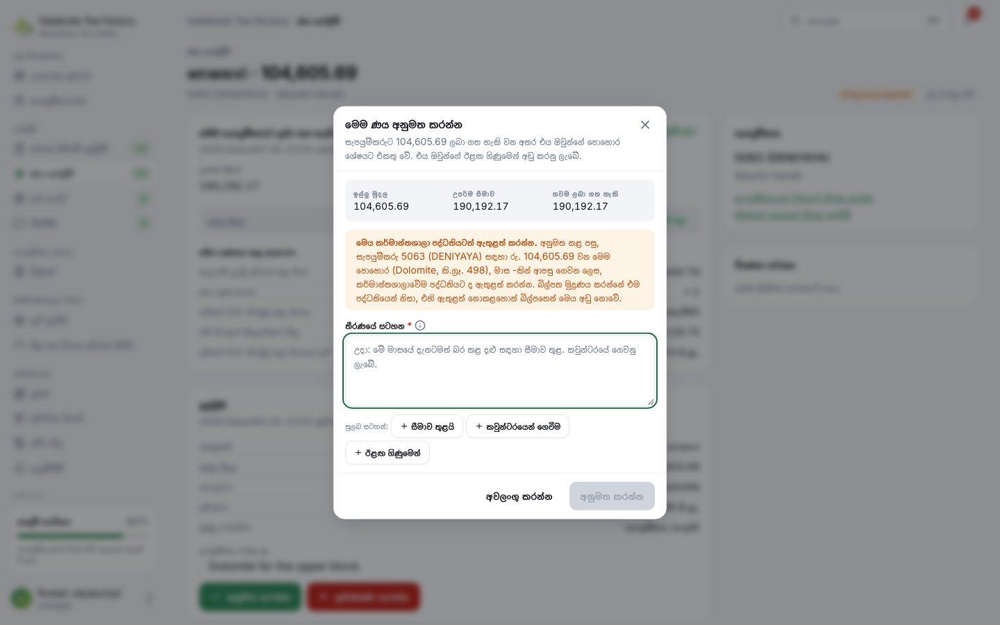
රූපය 5.3 අනුමත කිරීම: කර්මාන්තශාලා පද්ධතියට ඇතුළත් කරන්න යන මතක් කිරීම
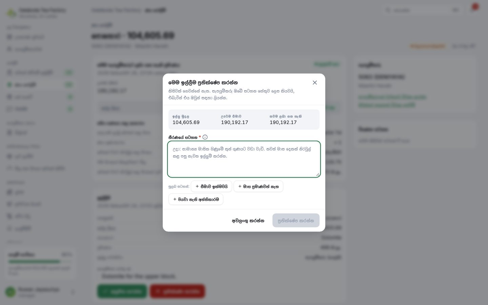
රූපය 5.4 ප්රතික්ෂේප කිරීම: සැපයුම්කරු සටහන කියවයි
කොන්සෝලය අනුමැතියක් ප්රතික්ෂේප කරන්නේ මෙවිටයි
- ඉල්ලීම සටහන් කළේ ඔබමයි (දෙදෙනෙකුගේ නීතිය);
- මුදල දැන් සැපයුම්කරුගේ සීමාවට වඩා වැඩිය (ඔහු ඉල්ලූ පසු මාසයක් ප්රකාශයට පත් වී තිබිය හැක);
- ණයක් තවම ගෙවිය යුතුය (නව ණයක් හෝ අත්තිකාරමක් සඳහා), නැත්නම් අත්තිකාරමක් තවම ගෙවා නැත (අත්තිකාරමක් සඳහා);
- සැපයුම්කරු අත්හිටුවා හෝ වසා ඇත.
6. කවුන්ටරයේදී කළ ඉල්ලීමක් සටහන් කිරීම ලිපිකරු, සමමුහුර්තකරණය අක්රියයි
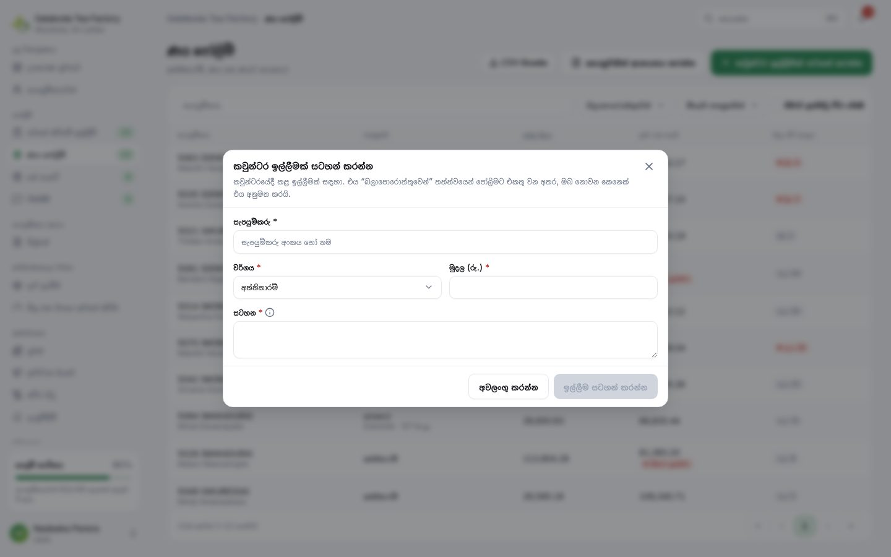
රූපය 6.1 කවුන්ටර ඉල්ලීමක් සටහන් කිරීම.
- ණය පෝලිම් තිරයේ කවුන්ටර ඉල්ලීමක් සටහන් කරන්න ක්ලික් කරන්න.
- සැපයුම්කරු අංකය හෝ නම ටයිප් කර වර්ගය තෝරන්න (අත්තිකාරම්, ණය හෝ පොහොර).
- මුදල ටයිප් කරන්න. ණය හෝ පොහොර සඳහා ආපසු ගෙවීමේ කාලය තෝරන්න; පොහොර සඳහා පොහොර වර්ගය සහ ප්රමාණය තෝරන්න (මිල කර්මාන්තශාලාවේ ලැයිස්තුවෙන් ලැබේ).
- අවම අකුරු 10ක සටහනක් ටයිප් කරන්න (උදාහරණයක් ලෙස "කවුන්ටරයේදී ඉල්ලුවා, පාසල් ගාස්තු සඳහා අවශ්යයි").
- ඉල්ලීම සටහන් කරන්න ක්ලික් කරන්න. එය පොරොත්තුවෙන් ලෙස පෝලිමට එකතු වේ. කළමනාකරුවෙකු එය තීරණය කරයි.
සීමාවට වඩා වැඩි ඉල්ලීමක් වුවද ඉල්ලූ ලෙසම, සීමාවද පෙන්වමින් සටහන් වේ. කළමනාකරු අනුමත කරන විට එය ප්රතික්ෂේප වේ. එකවර බොහොමයක්: ගොනුවකින් ආනයනය කරන්න.
7. තේ පැකට් කළමනාකරු
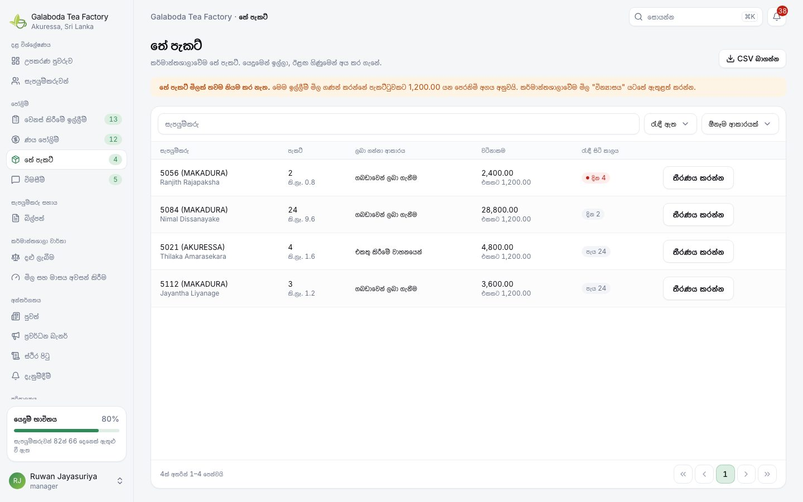
රූපය 7.1 බලා සිටින තේ පැකට්: පැකට් ගණන, බර, ලබා දෙන ආකාරය සහ වටිනාකම.
- තේ පැකට් ක්ලික් කරන්න. වාහනය පිටත් වීමට පෙර එහි ඇණවුම් අසුරන්න ඕනෑම ආකාරයක් → එකතු කිරීමේ වාහනයෙන් ලෙස පෙරන්න.
- පේළියක තීරණය කරන්න ක්ලික් කරන්න (රූපය 7.2).
- තීරණයේ සටහනක් ටයිප් කර (උදාහරණයක් ලෙස "සඳුදා සිට ගබඩාවෙන් ලබා ගැනීමට සූදානම්") අනුමත කරන්න හෝ ප්රතික්ෂේප කරන්න ක්ලික් කරන්න.
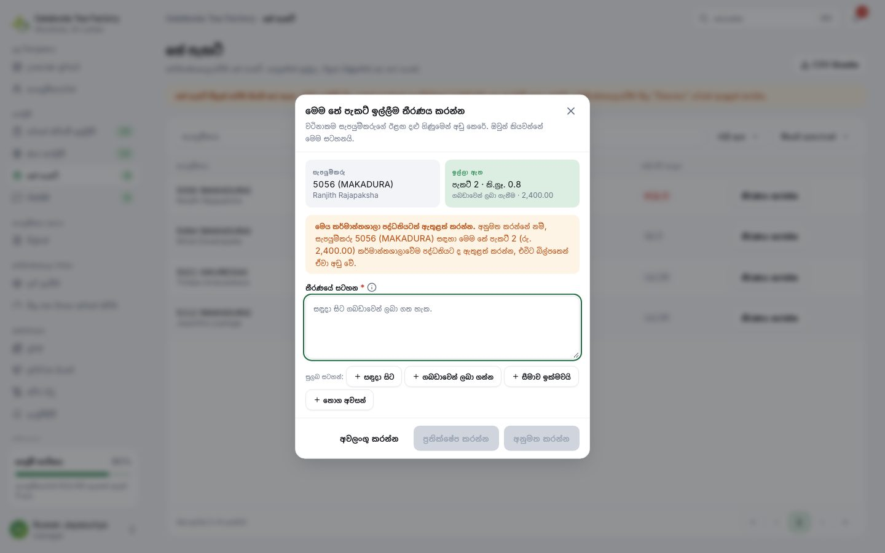
රූපය 7.2 උදාහරණය: සැපයුම්කරු 5056 පැකට් 2ක් (කි.ග්රෑ. 0.8) ඉල්ලයි, ගබඩාවෙන් ලබා ගනී, ඊළඟ බිල්පතේ තේ පේළියේ රු. 2,400.00.
ඔබ තීරණය කරන මොහොතේ මිල ස්ථිර වේ. ඉහළින් තැඹිලි පාට පේළියක් (රූපය 7.1) පෙනේ නම්, කර්මාන්තශාලාව තවම තමන්ගේම පැකට් මිලක් සකසා නැත: එය වින්යාසය → තේ පැකට් තුළ සකසන්න.
8. වෙනස් කිරීමේ ඉල්ලීම් ලිපිකරු හෝ කළමනාකරු
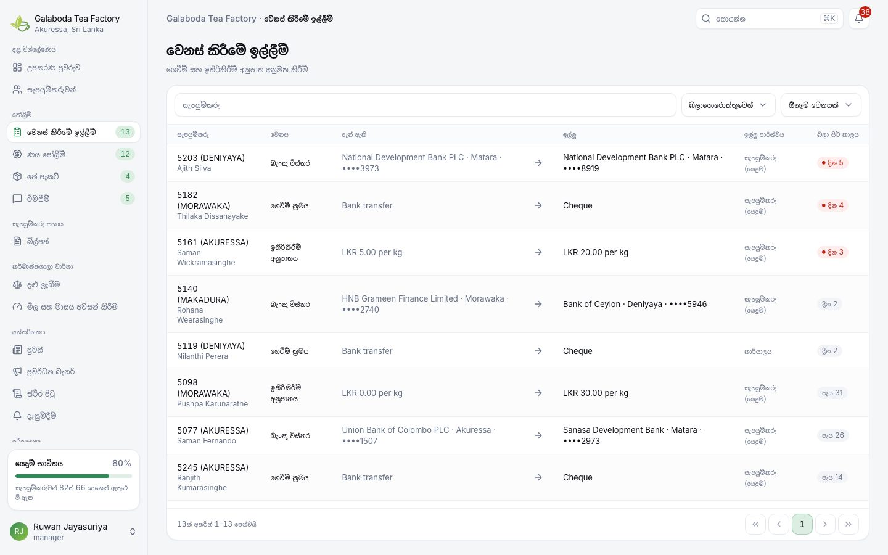
රූපය 8.1 සැපයුම්කරුවන් ඉල්ලූ වෙනස්කම්: බැංකු විස්තර, ගෙවීම් ක්රමය, ඉතිරිකිරීම් අනුපාතය සහ ලිපිනය. දැන් ඇති අගය සහ ඉල්ලූ අගය පැත්තෙන් පැත්තට.
- වෙනස් කිරීමේ ඉල්ලීම් ක්ලික් කර පේළියක් විවෘත කරන්න (රූපය 8.2).
- දැන් සක්රිය සහ ඉල්ලූ සසඳන්න; වෙනස් වූ පේළි සලකුණු කර ඇත.
- බැංකු වෙනසක් නම්, අනුමත කිරීමට පෙර පාස් පොත හෝ බැංකු ප්රකාශය පරීක්ෂා කරන්න.
- අනුමත කරන්න හෝ ප්රතික්ෂේප කරන්න ක්ලික් කර, සටහන ටයිප් කර (උදාහරණයක් ලෙස "කවුන්ටරයේදී පාස් පොත ජා.හැ. පත සමඟ පරීක්ෂා කළා") තහවුරු කරන්න (රූපය 8.3).
- එම වෙනසම කර්මාන්තශාලා පද්ධතියේත් කරන්න.
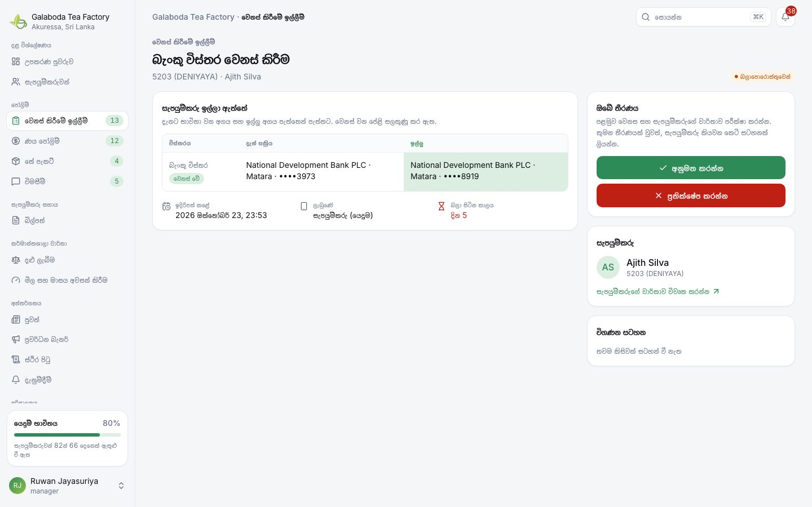
රූපය 8.2 බැංකු විස්තර වෙනසක්
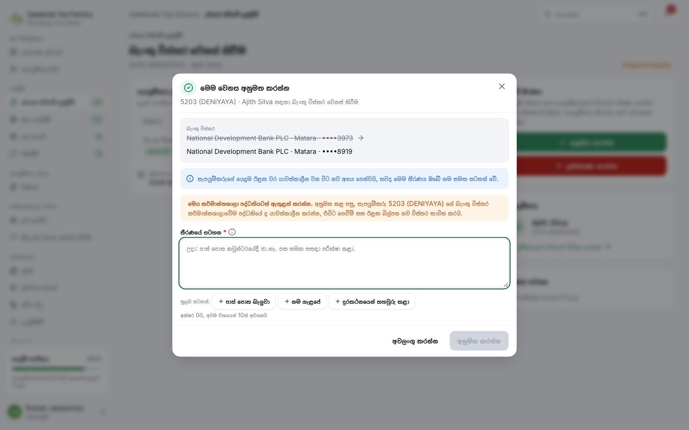
රූපය 8.3 මෙම වෙනස අනුමත කරන්න
ඔබ අනුමත කරන තුරු සැපයුම්කරුට තවමත් ගෙවන්නේ පැරණි ගිණුමටයි. යෙදුම නව ගිණුම පොරොත්තුවෙන් ලෙස පෙන්වයි. ඉතිරිකිරීම් අනුපාත වෙනසක් ක්රියාත්මක වන්නේ තවම අවසන් නොකළ ඊළඟ මාසයේ සිටයි.
9. විමසීම් ලිපිකරු
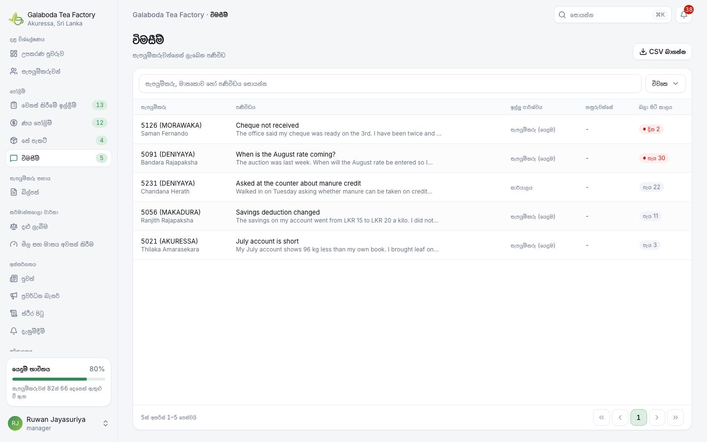
රූපය 9.1 සැපයුම්කරුවන්ගෙන් පණිවිඩ
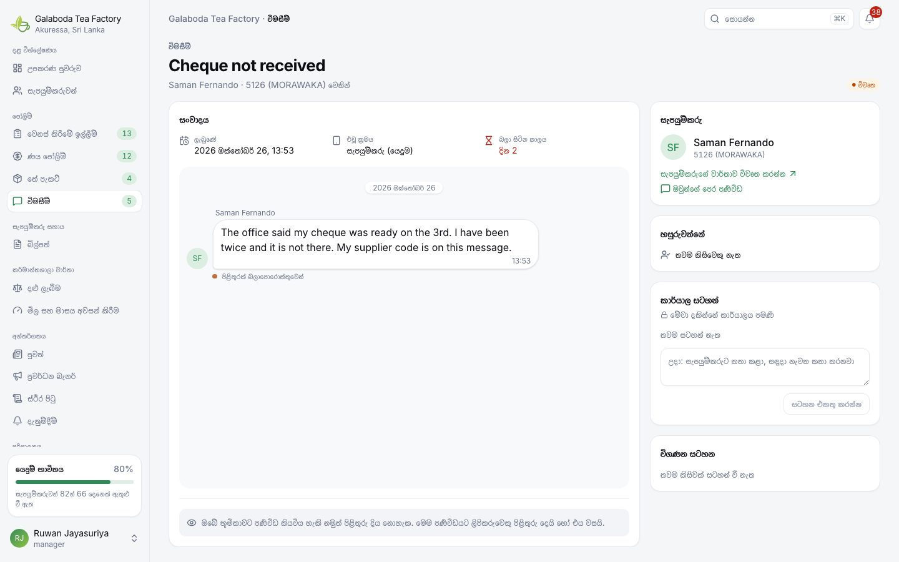
රූපය 9.2 සංවාදයක්
- විමසීම් ක්ලික් කර පණිවිඩයක් විවෘත කරන්න.
- පිළිතුරක් ටයිප් කර (හෝ යෝජිත පිළිතුරක් ක්ලික් කර) යවන්න. සැපයුම්කරු එය යෙදුමේ කියවයි, ඔහුට දැනුම්දීමක්ද ලැබේ.
- තවත් කිසිවක් අවශ්ය නැති විට විමසීම වසා දමන්න. පිළිතුරු නොදී වසා දැමීමෙන්, පිළිතුරක් අවශ්ය නොවූ පණිවිඩයක් ගොනු කෙරේ.
දකුණු පැත්තේ ඇති කාර්යාල සටහන් දකින්නේ කාර්යාලය පමණි (උදාහරණයක් ලෙස "සැපයුම්කරුට කතා කළා, සඳුදා නැවත කතා කරයි"). කළමනාකරුවෙකුට විමසීම් කියවිය හැකි නමුත් පිළිතුරු දිය නොහැක (රූපය 9.2, පහළ).
10. බිල්පත්
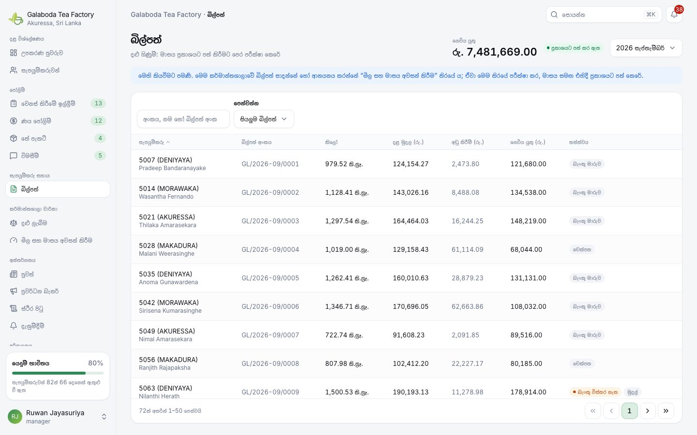
රූපය 10.1 මාසයේ දළු ගිණුම්, ගෙවිය යුතු මුළු මුදල සහ මාසය තෝරන ස්ථානය සමඟ.
- බිල්පත් ක්ලික් කර ඉහළ දකුණෙන් මාසය තෝරන්න.
- අංකය, නම හෝ බිල්පත් අංකය අනුව සොයන්න, නැත්නම් පෙන්වන්න භාවිත කර, උදාහරණයක් ලෙස ගෙවිය යුතු කිසිවක් නැති හෝ බැංකු විස්තර නැති බිල්පත් ලැයිස්තුගත කරන්න.
- සැපයුම්කරු දකින ආකාරයටම බිල්පත විවෘත කිරීමට පේළියක් ක්ලික් කරන්න (රූපය 10.2).
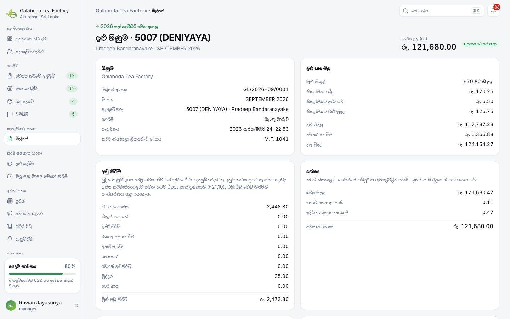
රූපය 10.2 එක් බිල්පතක්, මුද්රිත පත්රිකාව මෙන් සකසා ඇත.
උදාහරණය: සැපයුම්කරු 5007, 2026 සැප්තැම්බර් (රූපය 10.2)
කි.ග්රෑ. 979.52 × (මිල 120.25 + අමතර 6.50 = 126.75)
දළු මුදල 117,787.28
අමතර ගෙවීම 6,366.88
පෙරට ගෙන ආ කාසි 0.11
දළ මුදල 124,154.27
අඩු කිරීම් 2,473.80 (ප්රවාහනය 2,448.80 + මුද්දර 25.00)
ශේෂ මුදල 121,680.47
අවසාන ශේෂය 121,680.00 කාසි 0.47 ඔක්තෝබර් වෙත ගෙන යයි
බිල්පත් තිරය පරීක්ෂා කිරීමට සහ සැපයුම්කරුවන්ට පිළිතුරු දීමටයි. බිල්පත් සාදා ප්රකාශයට පත් කරන්නේ මිල සහ මාසය අවසන් කිරීම තිරයේය (12 සහ 13 කොටස්). කර්මාන්තශාලා සමමුහුර්තකරණය සක්රිය විට බිල්පත් කර්මාන්තශාලා පද්ධතියෙන් ලැබෙන අතර ඒවා කියවීමට පමණි.
11. දළු ලැබීම ලිපිකරු, සමමුහුර්තකරණය අක්රියයි
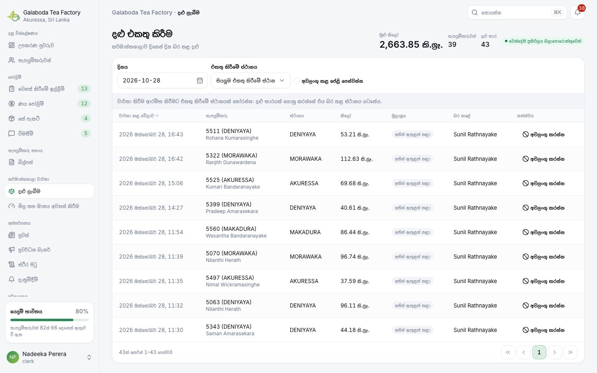
රූපය 11.1 එක් දිනක කිරුම්: සැපයුම්කරුවන් 39 දෙනෙකුගෙන් භාර 43කින් කි.ග්රෑ. 2,663.85.
- දළු ලැබීම ක්ලික් කරන්න. දිනය සහ එකතු කිරීමේ ස්ථානය තෝරන්න.
- එක් එක් කිරුම ඇතුළත් කරන්න: සැපයුම්කරු අංකය, ඉන්පසු කිලෝ. ඔබ ඇතුළත් කරන විට ඉහළ ඇති එකතුව යාවත්කාලීන වේ. එබැවින් වැරදියට ටයිප් කළ කිලෝවක් බිල්පතකට යාමට පෙර පෙනේ.
- කිරුමක් නිවැරදි කිරීමට, එහි පේළියේ අවලංගු කරන්න ක්ලික් කර හේතුව දෙන්න; ඉන්පසු නිවැරදි එක ඇතුළත් කරන්න. කිරුමක් කිසි විටෙක මකා දමන්නේ නැත.
- එක් එක් සැපයුම්කරුගේ දළු කිරන දිනයේදීම ඇතුළත් කරන්න: යෙදුමේ අත්තිකාරම් සීමාව යනු මේ මාසයේ මේ දක්වා කිලෝ ප්රමාණයයි.
- ප්රකාශයට පත් කළ මාසයක් අගුළු දමා ඇත: එහි දළු තවදුරටත් වෙනස් කළ නොහැක.
- තරාදියේ ගොනුවෙන් දිනක හෝ මාසයක කිරුම් ආනයනය කිරීම ඉදිරියේදී ලැබේ.
12. මිල සහ මාසය අවසන් කිරීම: ගණනය කරන බිල්පත් ලිපිකරු සහ කළමනාකරු
බිල්පත් කොන්සෝලයේම ගණනය කරන කර්මාන්තශාලාවක් සඳහා (වින්යාසය → බිල්පත් ගණනය → "මෙම කොන්සෝලයේ ගණනය කරයි").
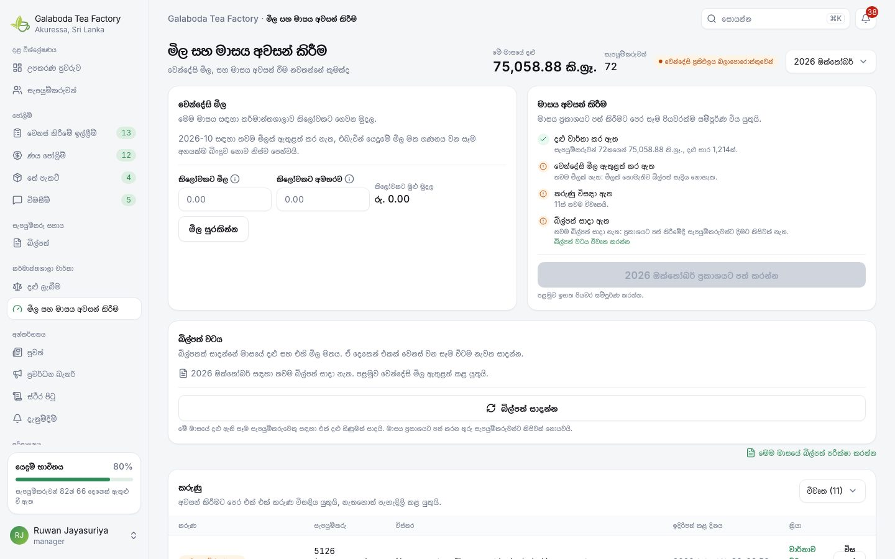
රූපය 12.1 මිල සහ මාසය අවසන් කිරීම: වෙන්දේසි මිල, මාසය අවසන් කිරීමේ පරීක්ෂා ලැයිස්තුව, බිල්පත් වටය සහ කරුණු.
- මිල ඇතුළත් කරන්න (කළමනාකරු). වෙන්දේසි ප්රතිඵලය දැනගත් විට කිලෝවකට මිල සහ ඇත්නම් කිලෝවකට අමතරව ටයිප් කර මිල සුරකින්න ක්ලික් කරන්න.
- පිටුවේ පහළ ඇති කරුණු විසඳන්න (උදාහරණයක් ලෙස දළු ඇති නමුත් බැංකු විස්තර නැති සැපයුම්කරුවෙක්), එක් එක් එක සටහනක් සමඟ.
- බිල්පත් සාදන්න (ලිපිකරු හෝ කළමනාකරු): බිල්පත් සාදන්න ක්ලික් කරන්න, ඉන්පසු බිල්පත් තිරයේ මෙම මාසයේ බිල්පත් පරීක්ෂා කරන්න.
- ප්රකාශයට පත් කරන්න: පරීක්ෂා ලැයිස්තුවේ සෑම පියවරක්ම සලකුණු වූ විට, වෙනත් කළමනාකරුවෙකු (මිල ඇතුළත් කළ අය නොවේ) ප්රකාශයට පත් කරන්න ක්ලික් කරයි. බිල්පත් යෙදුමේ පෙනෙන අතර සෑම සැපයුම්කරුවෙකුටම දැනුම් දෙනු ලැබේ.
ප්රකාශයට පත් කිරීමෙන් ණය සීමා වෙනස් වේ
අත්තිකාරම්, ණය සහ පොහොර සීමා ගණනය කරන්නේ අවසන් වරට ප්රකාශයට පත් කළ මාසයෙනි. එබැවින් මාසයක් ප්රකාශයට පත් කිරීමෙන් සෑම සැපයුම්කරුවෙකුගේම සීමා වෙනස් වේ.
ඉදිරියේදී
බිල්පතක "වෙනත් අඩුකිරීම්" ටයිප් කිරීම, සහ ගණනය කළ සෑම බිල්පතක්ම කර්මාන්තශාලාවේ මුද්රිත පත්රිකාව සමඟ සැසඳීම (රඳවා තැබීම සහ නිදහස් කිරීම සමඟ), සේවාදායකය සහාය දුන් විට මෙහි පෙනේ.
13. මිල සහ මාසය අවසන් කිරීම: ආනයනය කරන බිල්පත් ලිපිකරු සහ කළමනාකරු
තමන්ගේම පද්ධතියෙන් බිල්පත් මුද්රණය කරන කර්මාන්තශාලාවක් සඳහා (galaboda): ලිපිකරු සම්පූර්ණ බිල්පත් ආනයනය කරයි, කොන්සෝලය ඒවා මුද්රණය වූ ආකාරයටම තබා ගනී, කළමනාකරුවෙකු ඒවා ප්රකාශයට පත් කරයි. ලිපිකරුට මෙම පිටුව පෙනෙන්නේ මිල කියවීමට පමණක් ලෙස සහ ප්රකාශයට පත් කිරීමේ බොත්තම නොමැතිවයි.
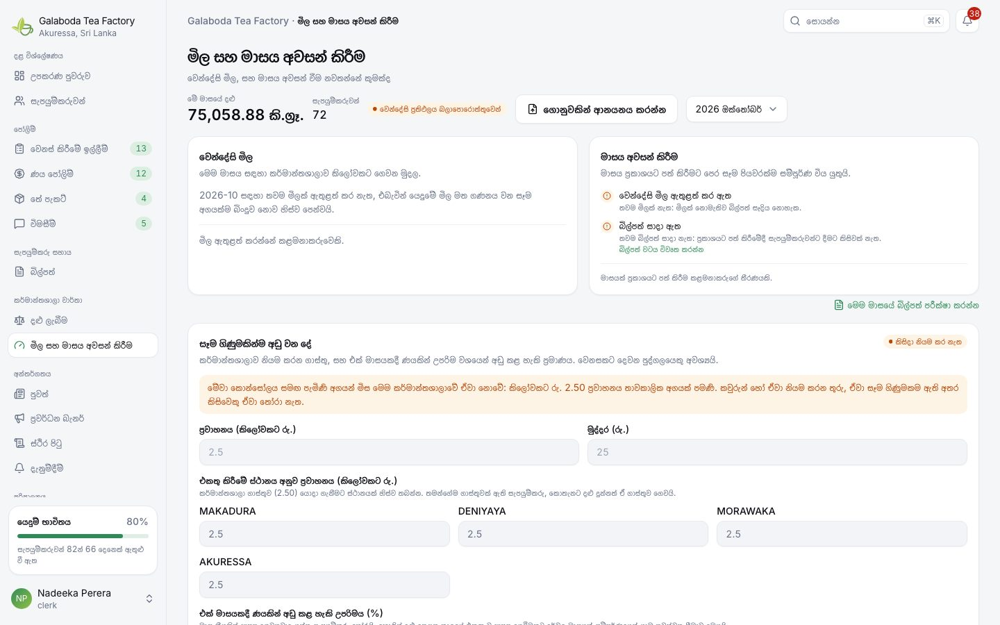
රූපය 13.1 බිල්පත් ආනයනය කරන කර්මාන්තශාලාවක මිල සහ මාසය අවසන් කිරීම: ඉහළින් "ගොනුවකින් ආනයනය කරන්න".
13.1 මාසයක බිල්පත් ආනයනය කරන්න
- පත්රිකා මුද්රණය කළ පසු (ඊළඟ මාසයේ 10 වැනිදා පමණ), කර්මාන්තශාලා පද්ධතියෙන් මාසයේ සම්පූර්ණ බිල්පත් Excel වෙත අපනයනය කරන්න.
- මිල සහ මාසය අවසන් කිරීම තිරයේ ගොනුවකින් ආනයනය කරන්න ක්ලික් කරන්න. කවුළුව තීරු ලැයිස්තුගත කරයි; අනිවාර්ය ඒවා * ලකුණින් දක්වා ඇත (රූපය 13.2). සැකිල්ල බාගන්න මගින් උදාහරණ පේළියක් සහිත ගොනුවක් ලැබේ.
- ගොනුව තෝරන්න. කිසිවක් සුරැකීමට පෙර කොන්සෝලය සෑම පේළියක්ම පරීක්ෂා කරයි.
- පේළියක් වැරදි නම් කිසිවක් සුරැකෙන්නේ නැත: ලැයිස්තුව පේළිය සහ ගැටලුව පෙන්වයි. ගොනුව නිවැරදි කර නැවත ආනයනය කරන්න.
- ගොනුව පිළිගත් විට බිල්පත් තිරයේ බිල්පත් පරීක්ෂා කරන්න. ගොනුව ආනයනය නොකළ කළමනාකරුවෙකු මාසය ප්රකාශයට පත් කරයි.
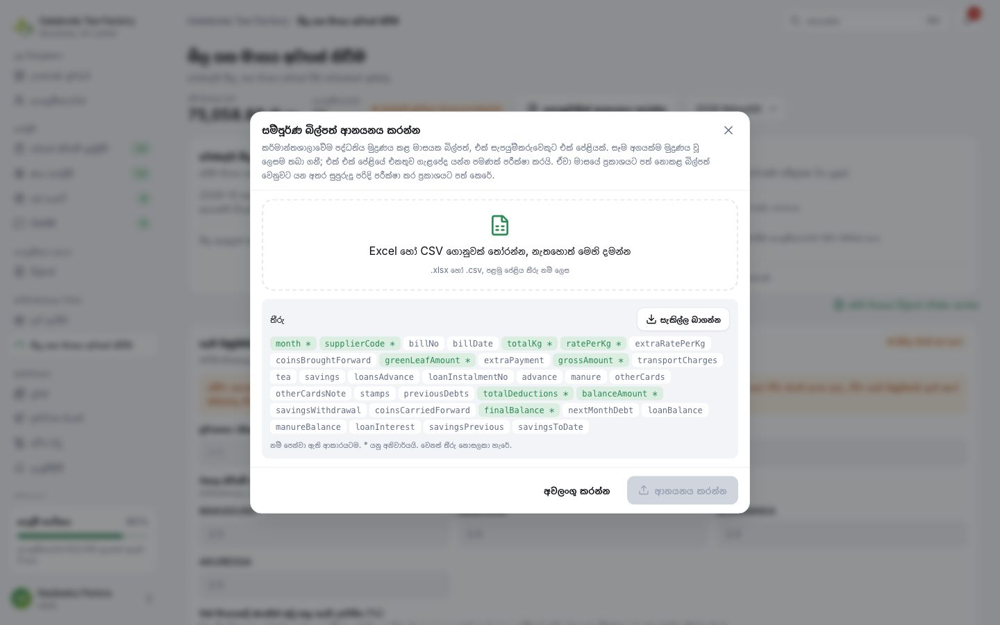
රූපය 13.2 සම්පූර්ණ බිල්පත් ආනයනය කිරීම: ගොනුවේ තිබිය යුතු තීරු නම්.
13.2 ආනයනය පරීක්ෂා කරන දේ
| පරීක්ෂාව | ප්රතික්ෂේප වීමක උදාහරණයක් |
|---|
| සෑම පේළියක්ම ශතයට නිවැරදිව එකතු වේ | දළ මුදල දළු + අමතර + පෙරට ගෙන ආ කාසි නොවේ |
| කොන්සෝලයේ අනුමත කළ සියල්ල පත්රිකාවේ ඇත | "5708: මෙම මාසයට අපි රු. 40,000.00 අනුමත කළා, පත්රිකාවේ එය නැත." එය කර්මාන්තශාලා පද්ධතියට ඇතුළත් කර නැවත අපනයනය කරන්න |
| මාසය අවසන් වී ඇති අතර මාස පිළිවෙළින් පැමිණේ | ඔක්තෝබර් 20 දින ඔක්තෝබර් ආනයනය කිරීම, නැත්නම් අවසන් වරට ප්රකාශයට පත් කළ මාසයට පෙර මාසයක් ආනයනය කිරීම |
| ශේෂ තීරු ඇත | Loan Balance, Manure Balance හෝ Savings To-date තීරු නැති ගොනුවක් |
එක් කොට්ඨාසයකට එක් ගොනුවක් වුවද කමක් නැත: සෑම ගොනුවක්ම එහි ඇති සැපයුම්කරුවන් පමණක් ප්රතිස්ථාපනය කරයි. මාසය ප්රකාශයට පත් කළ පසු ලැබෙන කොට්ඨාස ගොනුවක්, කළමනාකරුවෙකු එහි බිල්පත් ප්රකාශයට පත් කරන තුරු බලා සිටී.
13.3 ඕනෑම ගොනුවක් ආනයනය කිරීම
- Excel (.xlsx) හෝ CSV, පළමු පේළියේ තීරු නම් සමඟ.
- සියලු පේළි හෝ කිසිවක් නැත: එක ගැටලුවක් නිසා මුළු ගොනුවම ප්රතික්ෂේප වේ. පළමු දත්ත පේළිය පේළිය 2යි.
- අගයන් වට කරන්නේ නැත, ප්රතික්ෂේප කරයි: දශමස්ථාන වැඩි වීම, ඍණ ලකුණක්, හෝ පෙබරවාරි 31.
- එක් ගොනුවකට පේළි 5,000ක් දක්වා.
14. පුවත්, බැනර් සහ ස්ථිර පිටු සංස්කාරක
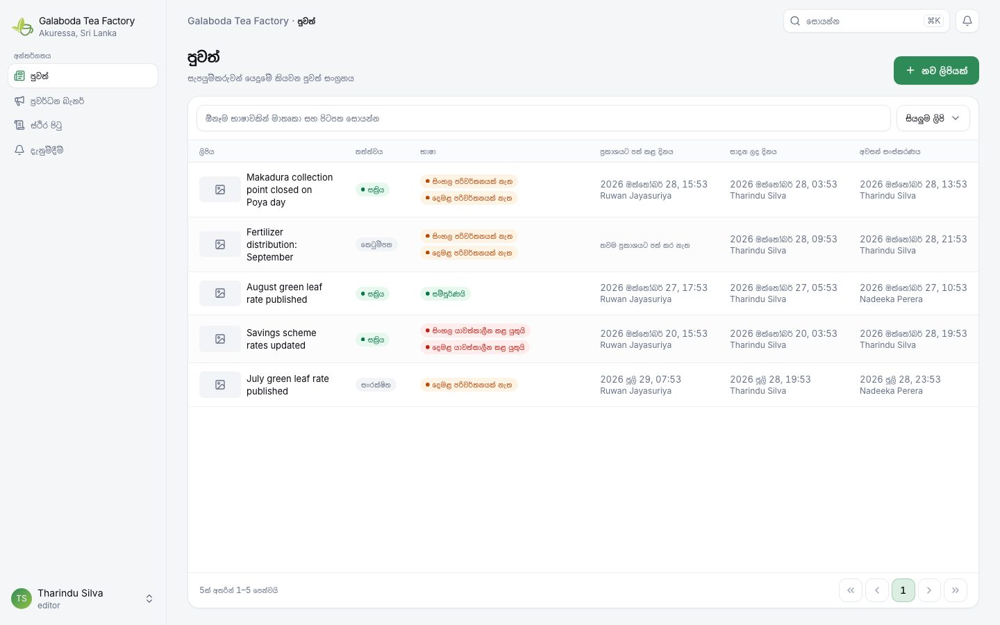
රූපය 14.1 පුවත්: එක් එක් ලිපියේ තත්ත්වය සහ නැති භාෂා.
14.1 පුවත් ලිපියක් ලියන්න
- පුවත් → නව ලිපියක් ක්ලික් කරන්න.
- එක් එක් භාෂා ටැබයේ (සිංහල, ඉංග්රීසි, දෙමළ) මාතෘකාව සහ පිටපත ලියන්න. ඔබ ළඟ ඇත්නම් කවර රූපයක් එකතු කරන්න.
- ප්රකාශයට පත් කරන්න ක්ලික් කරන්න, නැත්නම් පසුව ප්රකාශයට පත් කිරීමට දිනයක් සහ වේලාවක් තෝරන්න.
පරිවර්තනයක් නැතිව වුවද ප්රකාශයට පත් කළ හැක: යෙදුම එම පාඨකයාට ඉංග්රීසි පිටපත පෙන්වයි, ලැයිස්තුවේ එය සලකුණු කරයි (උදාහරණයක් ලෙස "සිංහල පරිවර්තනයක් නැත"). "යාවත්කාලීන කළ යුතුයි" යනු එම පරිවර්තනය ලියූ පසු ඉංග්රීසි පිටපත වෙනස් වූ බවයි.
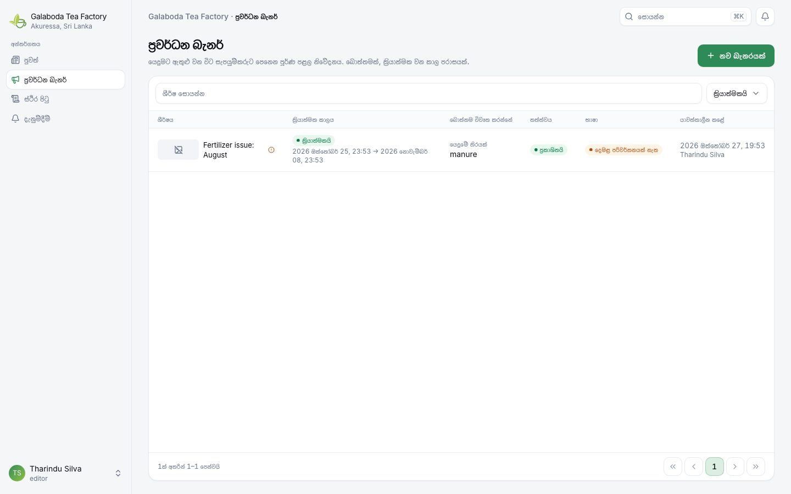
රූපය 14.2 ප්රවර්ධන බැනර්: ක්රියාත්මක වන කාල පරාසය සහ බොත්තම විවෘත කරන දේ.
14.2 ප්රවර්ධන බැනරයක් දමන්න
- ප්රවර්ධන බැනර් → නව බැනරයක්.
- එක් එක් භාෂාවෙන් ශීර්ෂය සහ බොත්තමේ නම ලියන්න; ඔබ ළඟ ඇත්නම් රූපය උඩුගත කරන්න.
- බොත්තම විවෘත කරන දේ (යෙදුමේ තිරයක්, වෙබ් අඩවියක්, දුරකථන අංකයක් හෝ විද්යුත් තැපෑලක්) සහ ආරම්භක සහ අවසාන දින තෝරන්න.
- ප්රකාශයට පත් කරන්න. සැපයුම්කරුවන්ට එය පෙනෙන්නේ ආරම්භක සහ අවසාන දින අතර පමණි.
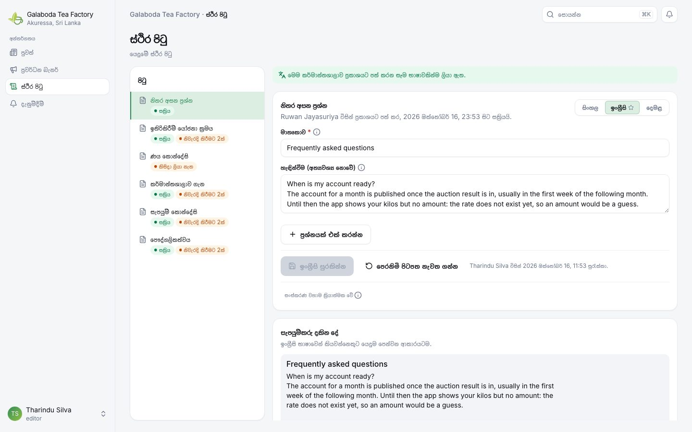
රූපය 14.3 ස්ථිර පිටු: නිතර අසන ප්රශ්න, ඉතිරිකිරීම් යෝජනා ක්රමය, ණය කොන්දේසි, අප ගැන, කොන්දේසි සහ පෞද්ගලිකත්වය, සැපයුම්කරු දකින දේ පිළිබඳ පෙරදසුනක් සමඟ.
14.3 ස්ථිර පිටුවක් සංස්කරණය කරන්න
පිටුව සහ භාෂාව තෝරා, පිටපත වෙනස් කර හෝ ප්රශ්නයක් එකතු කර, සුරකින්න ක්ලික් කරන්න. සක්රිය පිටුවක කරන වෙනසක් වහාම සක්රිය වේ. පෙරනිමි පිටපත නැවත ගන්න මගින් පිටුව සම්මත වචනවලට නැවත ගෙන එයි.
15. දැනුම්දීම්
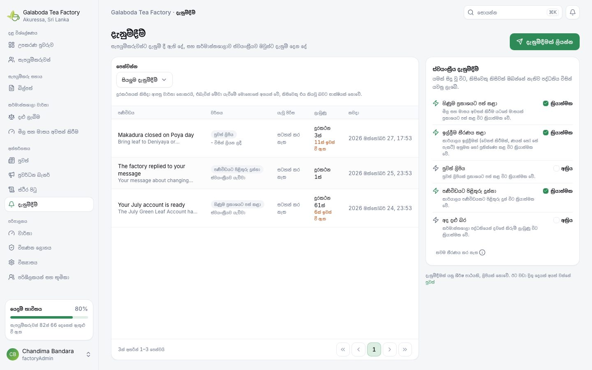
රූපය 15.1 යැවූ දැනුම්දීම්, සහ දකුණු පැත්තේ ස්වයංක්රීය දැනුම්දීම්.
- ස්වයංක්රීය (දකුණ): "ගිණුම ප්රකාශයට පත් කළා", "ඉල්ලීම තීරණය කළා", "පණිවිඩයට පිළිතුරු දුන්නා" සහ තවත් ඒවා. එක් එක් එක කර්මාන්තශාලාව සඳහා සක්රිය හෝ අක්රිය කළ හැක.
- දැනුම්දීමක් ලියන්න: සියලු සැපයුම්කරුවන්ට, එක් එකතු කිරීමේ ස්ථානයකට හෝ එක් සැපයුම්කරුවෙකුට, දැන් හෝ පසුව යවන ශීර්ෂයක්. දැනුම්දීමක් ආපසු ගත නොහැක. එබැවින් යැවීමට පෙර එය ලැබෙන්නේ කාටදැයි කොන්සෝලය පරීක්ෂා කරයි.
- එක් එක් දැනුම්දීම දුරකථන කීයකට ලැබුණාද, කී දෙනෙක් එම වර්ගය අක්රිය කර තිබුණාද යන්න ලැයිස්තුවේ පෙන්වයි.
16. වින්යාසය කර්මාන්තශාලා පරිපාලක
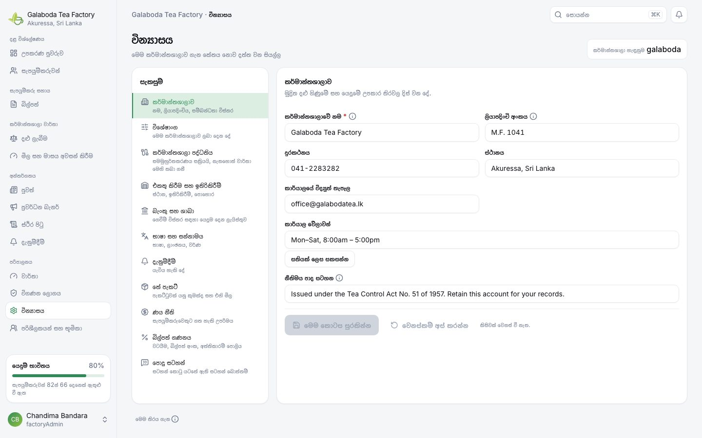
රූපය 16.1 වින්යාසය: වම් පැත්තේ කොටස් එකොළහක්; එක් එක් කොටස වෙන වෙනම සුරැකේ.
- වම් පැත්තෙන් කොටසක් තෝරා ක්ෂේත්ර වෙනස් කරන්න.
- මෙම කොටස සුරකින්න ක්ලික් කර තහවුරු කරන්න. වෙනස්කම් අස් කරන්න මගින් සුරැකී ඇති දේ නැවත ගෙන එයි.
| කොටස | එහි සකසන දේ |
|---|
| කර්මාන්තශාලාව | නම, ලියාපදිංචි අංකය, දුරකථනය, ස්ථානය, විද්යුත් තැපෑල, කාර්යාල වේලාවන් සහ සෑම බිල්පතකම මුද්රණය වන නීතිමය පාදකය |
| විශේෂාංග | යෙදුම සහ කොන්සෝලය ලබා දෙන සේවා: ඉතිරිකිරීම්, අත්තිකාරම්, ණය, පොහොර, තේ පැකට්, පුවත්, බැනර් සහ තවත් දේ |
| කර්මාන්තශාලා පද්ධතිය | සමමුහුර්තකරණය සක්රියයි (වාර්තා කර්මාන්තශාලාවේම පද්ධතියෙන් ලැබේ) හෝ අක්රියයි (කාර්යාලය ඒවා මෙහි තබා ගනී) |
| එකතු කිරීම සහ ඉතිරිකිරීම් | එකතු කිරීමේ ස්ථාන, සැපයුම්කරුවන්ට තෝරා ගත හැකි ඉතිරිකිරීම් මුදල්, මල්ලේ ප්රමාණය සහ මිල සමඟ පොහොර ලැයිස්තුව |
| බැංකු සහ ශාඛා | සැපයුම්කරුවන්ට තෝරා ගත හැකි බැංකු |
| භාෂා සහ සන්නාමය | භාෂා, වර්ණ සහ ලාංඡනය |
| දැනුම්දීම් | යැවිය හැකි දේ |
| තේ පැකට් | පැකට්ටුවේ ප්රමාණය, මිල, මාසයකට පැකට් ගණන |
| ණය නීති | එක් එක් සීමාව ගණනය කරන ආකාරය, සහ ලබා දෙන ආපසු ගෙවීමේ කාල |
| බිල්පත් ගණනය | බිල්පත් ලැබෙන්නේ කොහෙන්ද, රු. 1, 5 හෝ 10 ලෙස ගෙවීම, ඊළඟ බිල්පත් අංකය, අත්තිකාරම් සහ ණය පොලිය |
| පොදු සටහන් | තීරණ සහ පිළිතුරු කොටු යට ඇති යෝජිත සටහන් |
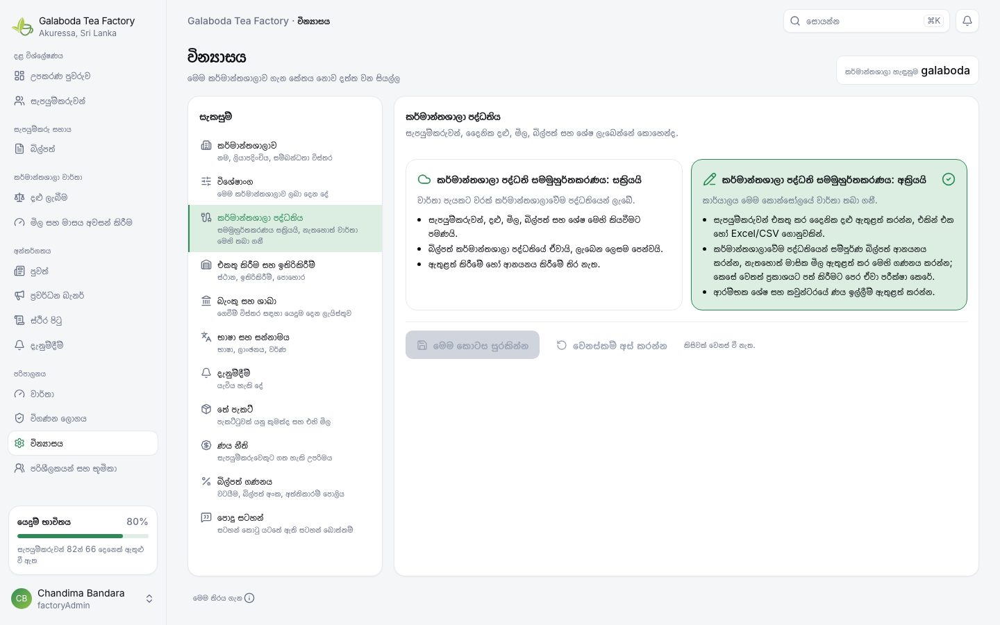
රූපය 16.2 කර්මාන්තශාලා පද්ධතිය: සමමුහුර්තකරණය සක්රිය හෝ අක්රිය
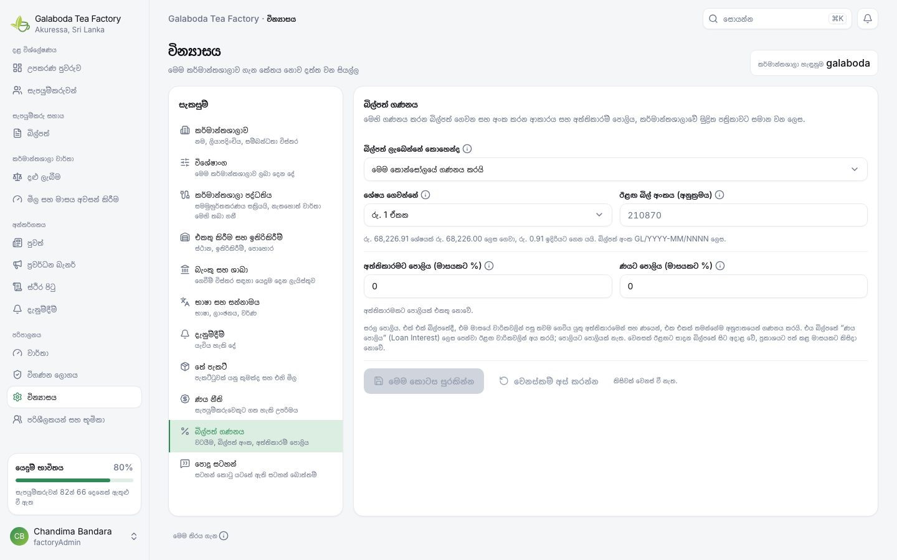
රූපය 16.3 බිල්පත් ගණනය
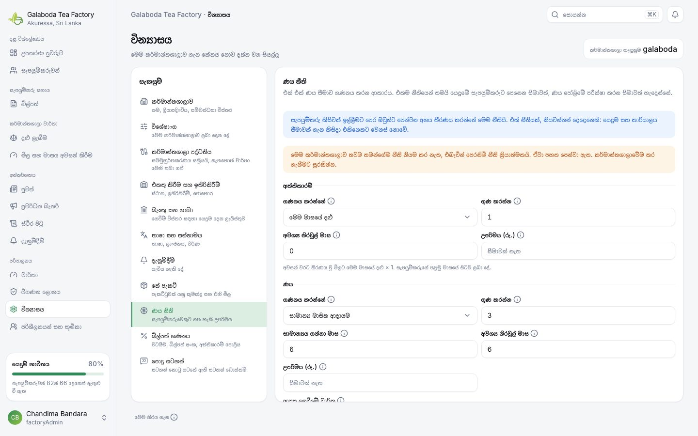
රූපය 16.4 ණය නීති
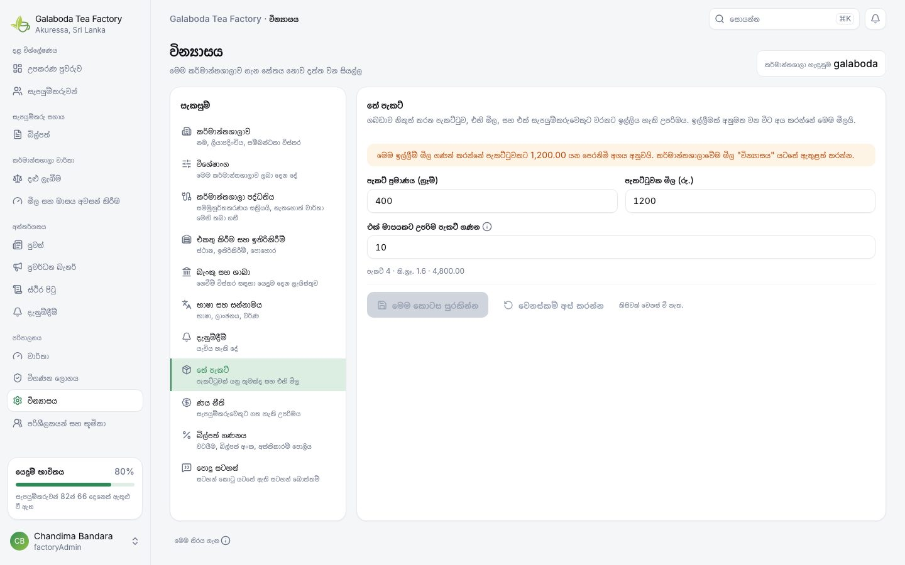
රූපය 16.5 තේ පැකට්
උදාහරණය: ණය නීතියක්
ණය: ගණනය කරන්නේ සාමාන්ය මාසික ආදායම, සාමාන්යය ගන්නා මාස 6, ගුණ කරන්න 3, අවශ්ය නිරවුල් මාස 6, උපරිමය හිස්. සාමාන්යය රු. 84,341.08ක් වන සැපයුම්කරුවෙකුට රු. 253,023.24ක් දක්වා ණය ගත හැක. තිරය ක්ෂේත්රවලට යටින් නීතිය වාක්යයකින් ලියා පෙන්වයි.
කොන්සෝලය ඉඩ නොදෙන වෙනස්කම්
- මාසයක බිල්පත් සාදා ප්රකාශයට පත් නොකර ඇති අතරතුර කර්මාන්තශාලා පද්ධතිය හෝ බිල්පත් ලැබෙන ක්රමය වෙනස් කිරීම.
- තවමත් මුදල් රඳවා ඇති හෝ ගෙවිය යුතුව ඇති අතරතුර ඉතිරිකිරීම්, ණය පහසුකමක් හෝ තේ පැකට් අක්රිය කිරීම.
- කිරුම් භාවිත කරන එකතු කිරීමේ ස්ථානයක්, හෝ ආපසු යොමු වන භාෂාව ඉවත් කිරීම.
17. පරිශීලකයන් සහ භූමිකා කර්මාන්තශාලා පරිපාලක
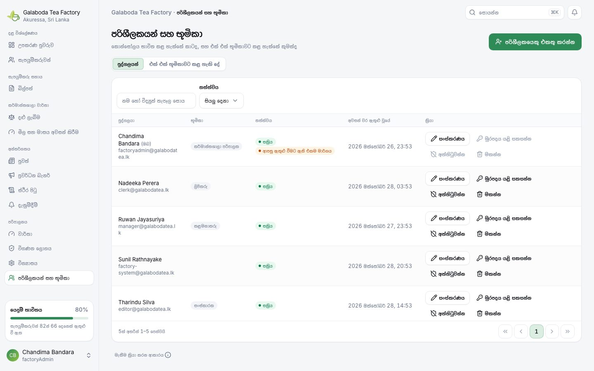
රූපය 17.1 පුද්ගලයන්: එක් එක් කොන්සෝල පරිශීලකයා, ඔහුගේ භූමිකාව සහ තත්ත්වය.
- පරිශීලකයන් සහ භූමිකා → පරිශීලකයෙකු එකතු කරන්න: නම, විද්යුත් තැපෑල සහ භූමිකාව.
- කොන්සෝලය පළමු මුරපදය එක් වරක් පමණක් පෙන්වයි. එය පරිශීලකයාට දෙන්න; පළමු වරට ඇතුළු වන විට ඔහු එය වෙනස් කළ යුතුය.
- පේළියෙන් මුරපදය යළි සකසන්න, අත්හිටුවන්න හෝ මකන්න. මකා දැමීම දින තුනක් බලා සිටින අතර ඒ දක්වා එය අස් කළ හැක.
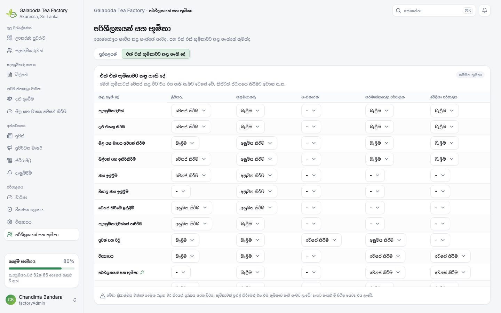
රූපය 17.2 එක් එක් භූමිකාවට කළ හැකි දේ: එක් එක් ක්ෂේත්රය සඳහා බැලීම, වෙනස් කිරීම හෝ අනුමත කිරීම.
අවසාන පරිපාලක ඉවත් කිරීමට, ඔබේම භූමිකාව වෙනස් කිරීමට, හෝ පරිශීලකයන් කළමනාකරණය කළ හැකි කිසිවෙකු නැති තත්ත්වයක් ඇති කිරීමට කොන්සෝලය ඉඩ නොදේ.
18. වාර්තා, විගණන ලොගය සහ දත්ත තත්ත්වය
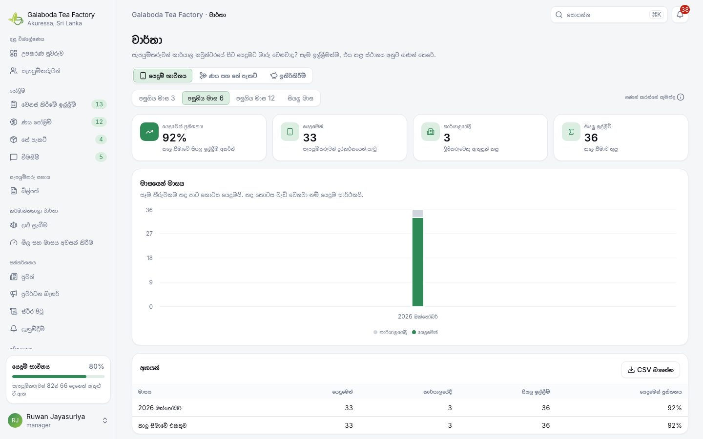
රූපය 18.1 වාර්තා → යෙදුම් භාවිතය: එම කාලය තුළ ඉල්ලීම්වලින් 92%ක් යෙදුමෙන් පැමිණියේය.
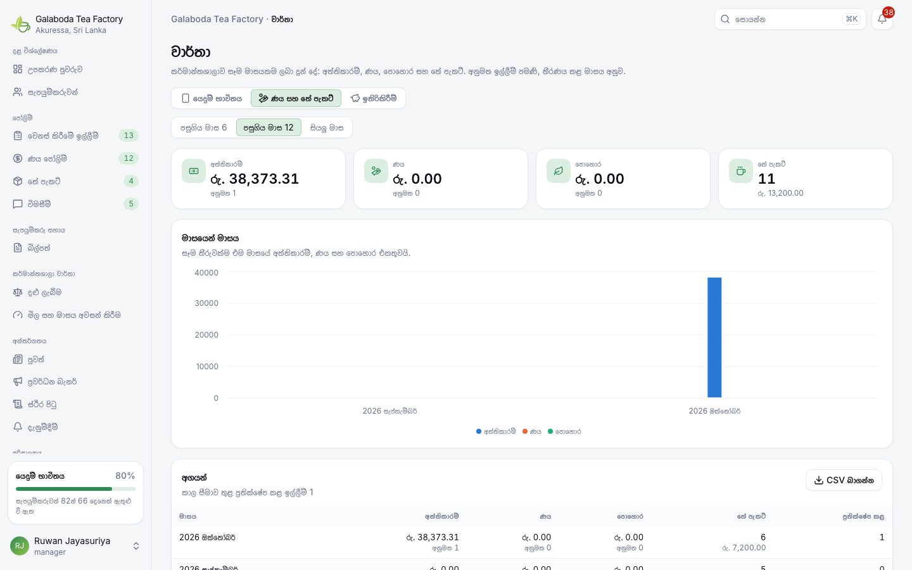
රූපය 18.2 ණය සහ තේ පැකට්
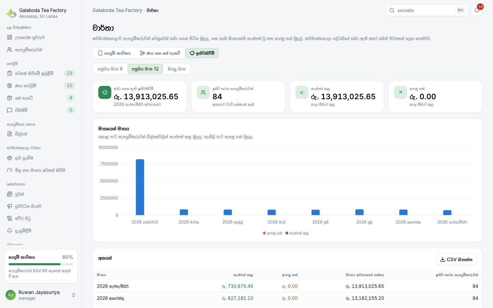
රූපය 18.3 තබා ගෙන ඇති ඉතිරිකිරීම්
- යෙදුම් භාවිතය: සැපයුම්කරුවන් කවුන්ටරයේ සිට යෙදුමට මාරු වෙනවාද.
- ණය සහ තේ පැකට්: අනුමත කළ අත්තිකාරම්, ණය සහ පොහොර, නිකුත් කළ තේ පැකට් සහ ප්රතික්ෂේප කළ ඉල්ලීම්, මාසයෙන් මාසය.
- ඉතිරිකිරීම්: කර්මාන්තශාලාව සැපයුම්කරුවන් වෙනුවෙන් තබා ගෙන සිටින මුදල, කී දෙනෙකු සඳහාද, සහ සෑම මාසයකම තැන්පත් වූ සහ ආපසු ගත් මුදල්.
- එක් එක් වගුවට යටින් CSV බාගන්න.
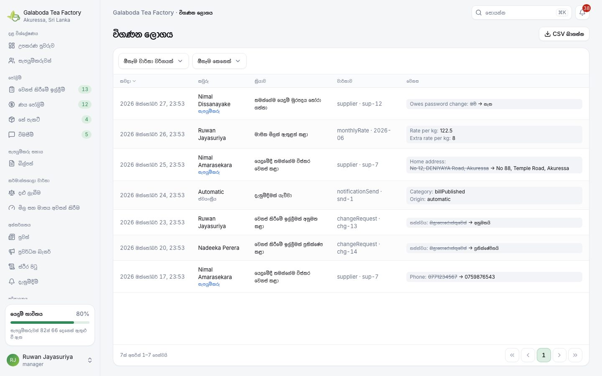
රූපය 18.4 විගණන ලොගය: කවුරු, කුමක්, කවදා කළාද, සහ වෙනස් වූයේ කුමක්ද.
විගණන ලොගය සංස්කරණය කළ නොහැක. වාර්තා වර්ගය හෝ පුද්ගලයා අනුව පෙරා, CSV ලෙස බාගන්න. දත්ත තත්ත්වය (සමමුහුර්තකරණය සක්රිය විට ඉහළ ඇති සමමුහුර්ත ලේබලයෙන්) මඟින්, සැපයුම්කරුවෙකුට අගයක් කීමට පෙර එම අගයන් කොතරම් යාවත්කාලීනද යන්න කියයි.
19. කොන්සෝලය ඉඩ නොදෙන විට
| පණිවිඩය (කෙටියෙන්) | කළ යුතු දේ |
|---|
| මෙය ඉදිරිපත් කළේ ඔබයි, වෙනත් අයෙක් තීරණය කළ යුතුය | වෙනත් කළමනාකරුවෙකුගෙන් ඉල්ලන්න |
| සීමාව ඉක්මවා | සටහනක් සමඟ ප්රතික්ෂේප කරන්න, නැත්නම් සීමාව තුළ කුඩා මුදලක් අනුමත කරන්න |
| ණයක් තවම ගෙවිය යුතුය | එය ගෙවා අවසන් වන තුරු නව ණයක් හෝ අත්තිකාරමක් නැත |
| ඉල්ලීමක් දැනටමත් තීරණයක් බලාපොරොත්තුවෙන් ඇත | පළමු ඉල්ලීම තීරණය කරන්න |
| සටහනක් අවශ්යයි | සෑම ප්රතික්ෂේප කිරීමකටම, අවලංගු කිරීමකටම සහ රඳවා තැබීමකටම හේතුවක් අවශ්යයි |
| ඔබේ භූමිකාව මෙයට ඉඩ නොදේ. | පිටුව අයත් වන්නේ වෙනත් භූමිකාවකටයි; පරිපාලකගෙන් ඉල්ලන්න |
| මාසය අගුළු දමා ඇත | එය ප්රකාශයට පත් කර ඇත; නිවැරදි කිරීම් ඊළඟ මාසයේ බිල්පතට යයි |
| පෙර මාසයක් ප්රකාශයට පත් කර නැත | මාස පිළිවෙළින් ප්රකාශයට පත් කරන්න |
| අනුමැතිය පත්රිකාවේ නැත | එය කර්මාන්තශාලා පද්ධතියට ඇතුළත් කර, අපනයනය කර, ගොනුව නැවත ආනයනය කරන්න |
| කාර්යබහුලයි, නැවත උත්සාහ කරන්න | එම මොහොතේ මාසයක් ප්රකාශයට පත් කෙරෙමින් තිබුණි; කිසිවක් සුරැකුණේ නැත, නැවත යවන්න |